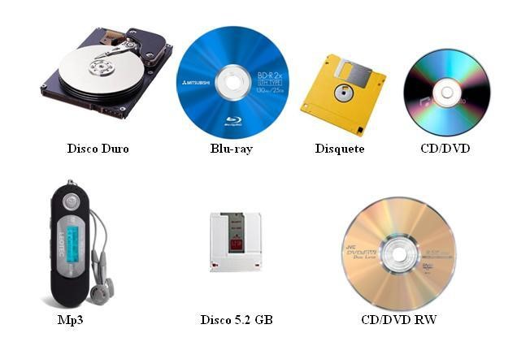

son los componentes físicos (como discos duros, SSDs, USBs, tarjetas SD) que guardan datos digitalmente (documentos, fotos, programas) de forma temporal o permanente para usarlos después, permitiendo guardar archivos, hacer copias de seguridad, transferir información y ejecutar aplicaciones
El almacenamiento de datos permite guardar y organizar archivos como fotos, videos, música, documentos y software para acceder a ellos en cualquier momento, además de proteger la información mediante copias de seguridad (backups) que aseguran su recuperación en caso de pérdida o fallo del sistema. También facilita la transferencia de archivos entre dispositivos, como de un PC a una USB, y permite ejecutar aplicaciones, ya que el sistema operativo y los programas se cargan desde el almacenamiento en tu dispositivo. Cuando el espacio interno se llena, se puede ampliar la capacidad utilizando unidades externas o servicios en la nube. Por último, el almacenamiento también es esencial para archivar grandes volúmenes de datos a largo plazo, como en bases de datos empresariales o archivos históricos.